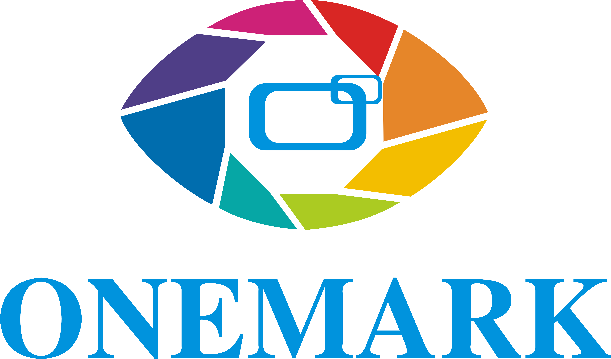
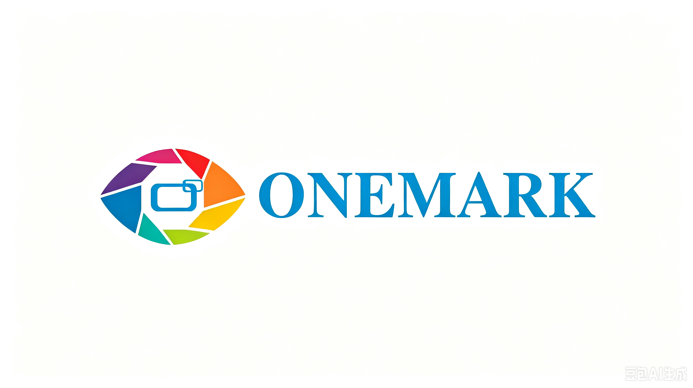
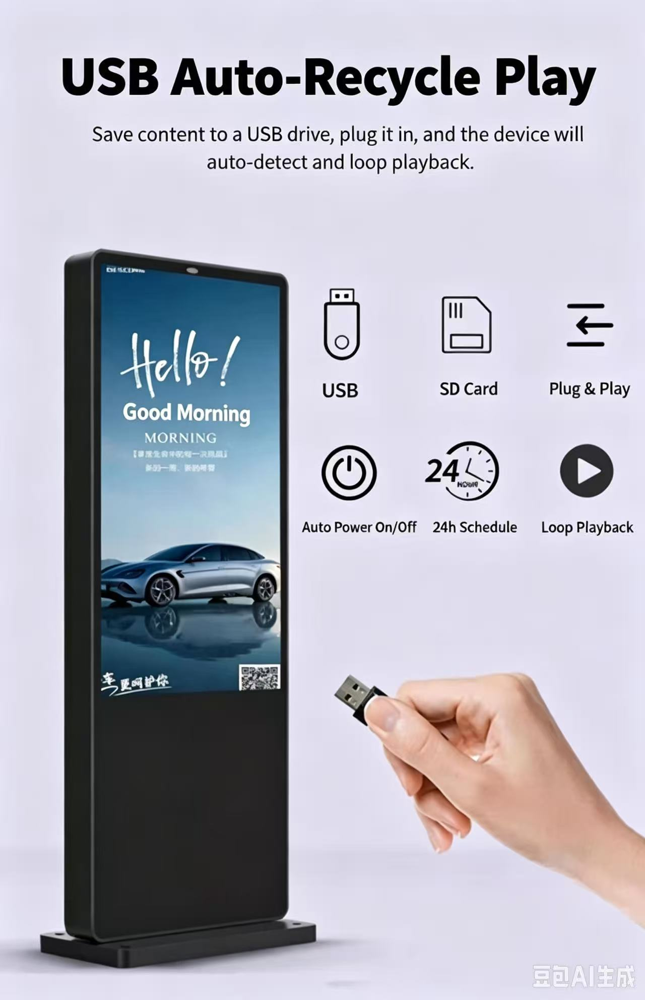
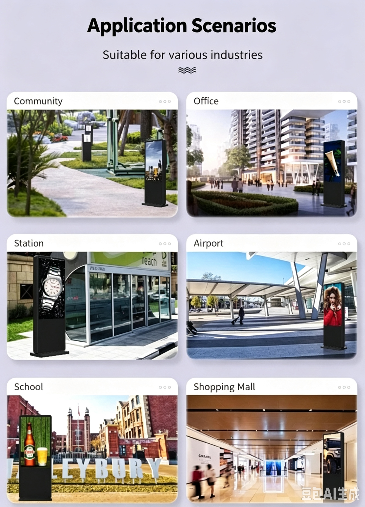

Fondée en 2005 à Shenzhen, en Chine, Onemark est un fabricant d'affichages commerciaux et de bornes libre-service, intégrant R&D, production et marketing.
Notre usine de plus de 3 000 m² sert des clients en Europe, en Amérique, au Moyen-Orient et en Asie du Sud-Est avec des services OEM/ODM/SKD.
Nous ne sommes pas qu'un fabricant — nous sommes votre partenaire d'affichage de bout en bout, du concept à la livraison.




